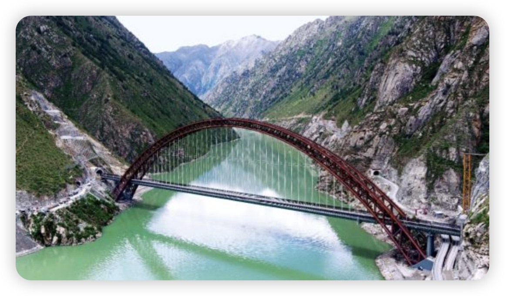

“现在的青藏线G109极其‘工业朋克’。”成都一位专注西藏旅游的导游对《中国新闻周刊》说。
今年6月，国道G109格尔木至那曲段公路改建工程启动。冻土融沉、路基开裂、路面起伏毁坏，G109一度“百病缠身”。由于大量施工便道的建立，以及原有道路拆除，现在从格尔木进入拉萨的线路十分难走。司机和导游们都在期待三年工期后G109的新生。
除了老路翻新，新的交通项目仍在西藏不断落地。近日，新藏铁路有限公司成立，由国铁集团全资持股。截至2024年底，西藏公路通车总里程和铁路运营里程分别达到12.49万公里、1359公里。多位受访者告诉《中国新闻周刊》，西藏的交通建设取得了举世瞩目的成就，但新建项目仍面临高桥隧比（即桥梁和隧道占总里程的比例）、冻土、地质灾害、高海拔缺氧、生态保护及物流保障等综合挑战。高原工程的复杂性和长期维护需求也使其成为世界级难题。

空中俯瞰世界海拔最高的铁路钢管混凝土拱桥——藏木雅鲁藏布江双线特大桥。
张晓昊接受《中国新闻周刊》采访时刚结束一天的检修工作。他是中国铁路青藏集团有限公司（以下简称“青藏集团公司”）拉萨基础设施段副段长，主管桥梁、隧道、涵洞、路基等基础设施的日常检查维护。“我们的主要工作就是保证设施设备状态良好，及时消除病害隐患。”
他负责的拉林铁路连接拉萨市与林芝市，是川藏铁路的重要组成部分，也是西藏目前仅有的电气化铁路，最高海拔3650米，线长403.14公里，于2021年6月建成投运。“电气化带来最直接的改变就是列车能力变强，单列列车的货运量可提升到 4000—5000吨。”
对于拉林铁路，张晓昊感触最深的便是极高的桥梁与极深、极长的隧道。拉林线穿越冈底斯山与念青唐古拉山、喜马拉雅山之间的藏南谷地，16次跨越雅鲁藏布江，全线桥隧比75％，“很多时候一个隧道出来接一段桥，紧接着又是隧道”。
但并非所有进藏线路都是高桥隧比。浙江工业大学土木工程学院教授彭卫兵向《中国新闻周刊》介绍，青藏铁路由于全线位于高原，桥隧比反而降低不少。多条进藏铁路中，川藏铁路桥隧比最高，总体达81％，其中隧道又占近90％。一位曾经参与国道318、219等项目西藏段建设的高级公路工程师告诉《中国新闻周刊》，就公路而言，桥隧比高主要有两方面原因。首先是公路等级，通常，等级越高的公路桥隧比越高，这是因为高等级公路对线形指标要求更高，为了让公路趋向线形或者说更“直”，就得多修建桥隧。其次，若经过区域地形复杂，桥隧比也会有所提高。
高桥隧比给交通建设带来了诸多难题。彭卫兵指出，就公路而言，桥隧比高集中体现为造价高，每公里造价可达普通公路的2—3倍。但带来工程难度更显著的因素是高地震烈度。
西藏位于印度板块和亚欧板块交界处，地震频繁、烈度高。彭卫兵认为，一般来说，桥隧建设都尽量避免跨越地质断层带，也就是地震高发区域，但在西藏很难完全避开，许多隧道甚至需要穿越断层。如此复杂的地质环境下，施工难度是世界级的。
对隧道来说，地应力是另一个问题。彭卫兵指出，西藏许多公路隧道埋深超千米，这就造成地应力非常高，有地方高达27兆帕，相当于270个大气压。因此在掘进建设的时候，工人常常遇上岩爆。此外，工人还常遇到高温热泉，突然喷出的泉水水温超过90℃。
多位受访者表示，在青藏高原修路，冻土是逃不过的难题。冻土是温度低于0℃且含有冰的特殊岩土体，可分为短时冻土、季节冻土以及多年冻土。彭卫兵指出，高温冻土年平均温度在-1℃—0℃，冻层会不可逆地发生沉降，从而破坏路面。低温冻土年均温在-1℃以下，公路病害暴发的速度相对慢一些。